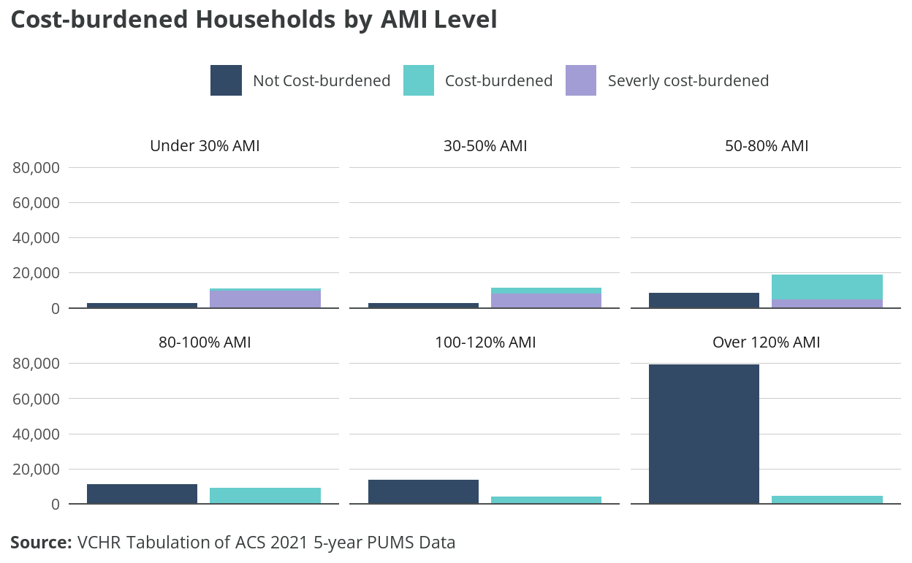
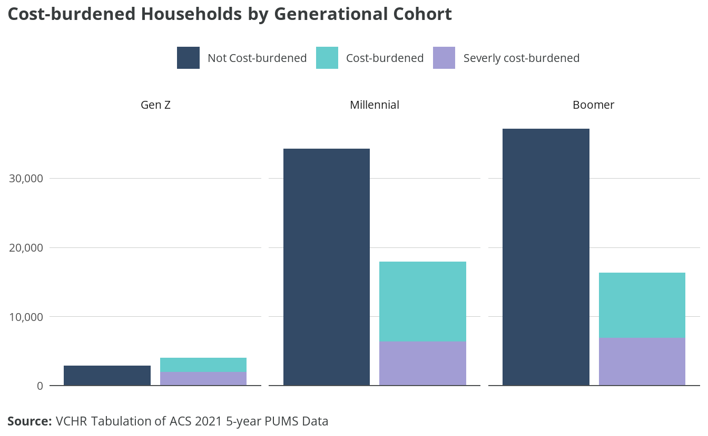
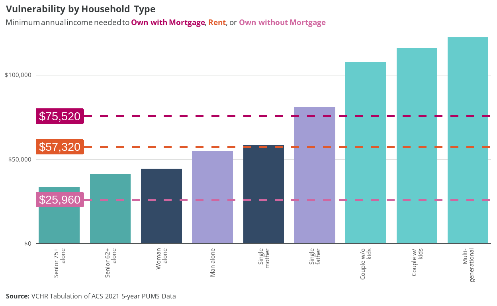
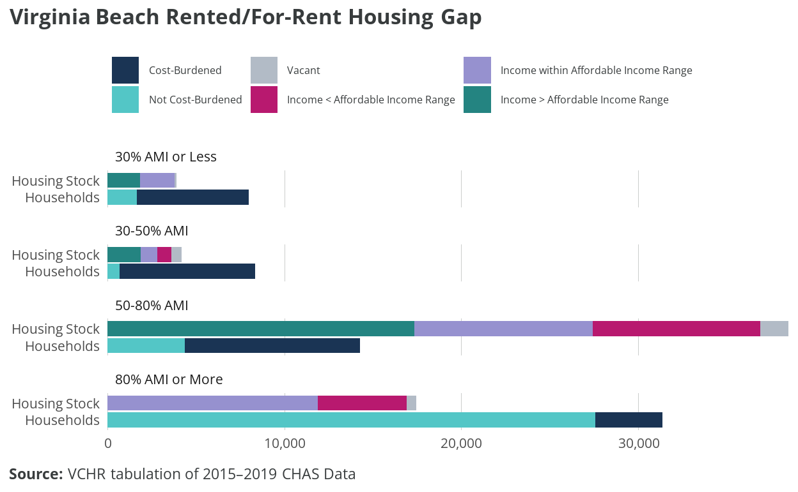
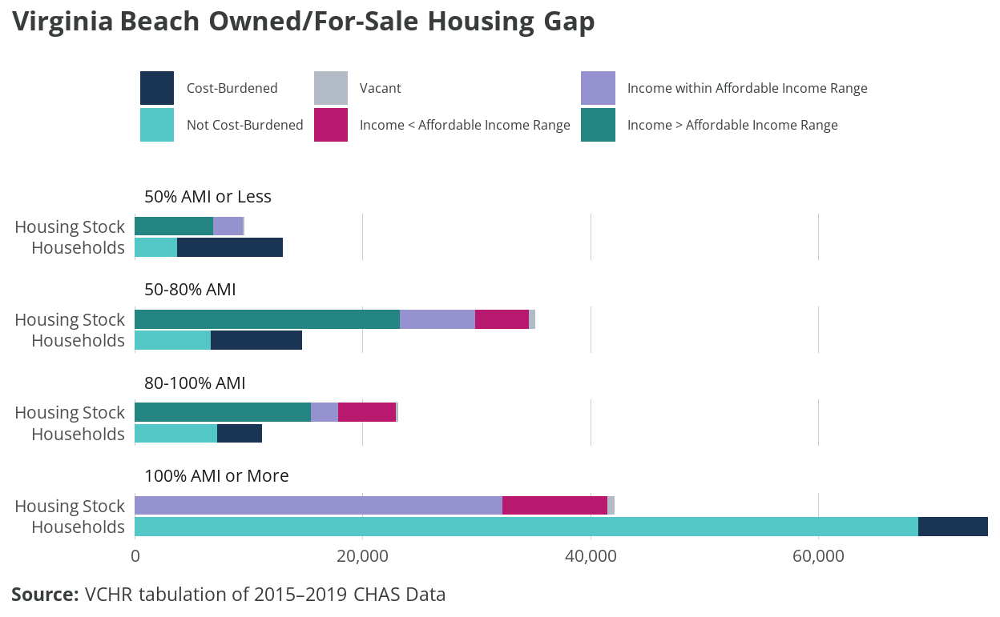

6 Housing affordability
6.1 Cost burden
VCHR uses housing cost burden to measure the need for more affordable housing and to identify associated housing insecurity. When homeowners are cost-burdened, they may choose to defer maintenance or forgo upgrades in favor of necessities like food, childcare, and medical care. When renters are cost-burdened, they may make choices between housing and other necessities, and their limited ability to save makes them vulnerable to eviction or homelessness in the event of an unexpected expense. Furthermore, inability to save may effectively prevent households from investing in educational enrichment to advance their earnings and from building wealth and security through homeownership. Approximately 59,365 Virginia Beach households, over one-third, are cost-burdened, meaning their housing costs are at least 30% of household income. Among cost-burdened households, 41%, approximately 24,301 households, are severely cost-burdened, paying 50% or more of household income in housing costs.
Cost burden has been trending down in Virginia Beach: cost burden among all households fell from 40% in 2014 to 33% in 2021, according to ACS five-year estimates. However, some improvements likely resulted from temporary pandemic-related programs in 2020-2021, including the Child Tax Credit and moratoria on evictions and rent increases. The COVID-19 pandemic had a mixed effect on housing insecurity. The pandemic initiated an economic shock disproportionately impacting lower-income, Black, and Hispanic households, but the policy response saw an unprecedented expansion of eviction moratoria, renter assistance funding, and unemployment insurance payments surpassing 100% wage replacement for some low-income workers. Implementation varied widely by jurisdictional boundaries, however, and not all households in need were able to receive assistance.1 As lower-income households face more competitive housing markets without this added support, gains in affordability may begin to erode. Indeed, cost burdens have increased post-pandemic, among all income levels and racial/ethnic groups, and the increase is driven mostly by renter households.2
Housing cost burden is more common among renter households than owner households. Nearly half of renter households are cost-burdened (29,825 households), compared to just over one-quarter of owner households (29,540). Among cost-burdened households, a higher share of renters is severely cost-burdened: 44% of cost-burdened renters compared to 38% of cost-burdened owners.

Households with lower incomes relative to AMI are cost-burdened at higher frequencies, and their cost burden is more likely to be severe. Large majorities of households under 80% of AMI are cost-burdened. Moderate-income and higher-income households are less impacted by housing cost burden. Approximately 45% of households between 80% and 100% of AMI, 23% of households between 100% and 120% of AMI, and 6% of households above 120% AMI are cost-burdened.
Cost-burdened households under 30% of AMI, and severely cost-burdened households between 30% and 50% of AMI, are at risk of homelessness due to housing unaffordability. Survey responses show particular concern for the lack of dedicated affordable housing or Section 8 vouchers available to these very low-income households.
Levels of housing cost burden vary among householders by race and ethnicity. The share of cost-burdened households among Black- and Hispanic-led households is around 40% — 10% higher than white- and Asian-led households. Nearly half of cost-burdened Black-led households are severely cost-burdened, compared to 36% of Asian-led, 37% of white-led, and 44% of Hispanic-led cost-burdened households.

The share of cost-burdened millennial households is slightly higher than that of boomer households: 34% and 31%, respectively. Among cost-burdened households, however, boomers are more likely to be severely cost-burdened: 43% of cost-burdened boomer households are severely cost-burdened, compared to 36% of cost-burdened millennial households.
Senior-headed households have high rates of cost burden and severe cost burden, particularly for seniors 75 and older. Nearly 40% of householders aged 75 and older are cost-burdened, and among these, over half are severely cost-burdened.
Seniors are more likely than other age groups to live alone, and housing cost burden is most acute among senior-headed, one-person households. A majority of these households are cost-burdened, and a majority of those are severely cost-burdened.
Survey responses noted a lack of affordable housing options for seniors, especially middle-income retirees receiving both Social Security income and a private pension. According to PUMS data, the median income of a person receiving Social Security is $32,745, while the median income of a person receiving both Social Security and retirement income is $46,972. These households may have incomes too high to qualify for housing assistance but too low to purchase housing on the open market. Should these seniors wish to vacate a long-owned home for a smaller or more accessible dwelling, affordability may prevent such a transition.
Households with low incomes and high housing costs are at particular risk of homelessness in the event of sudden income loss or emergency expenses. Approximately 18,847 households in Virginia Beach are at risk of homelessness. That’s over 10% of all Virginia Beach households. Approximately 10,953 households have incomes below 30% AMI and have housing costs of at least 30% of household income. Another 7,894 households have incomes between 30% and 50% of AMI and pay at least 50% of household income in housing costs.

[Figure X], above, shows median household income of common or notable household types in Virginia Beach. The red horizontal lines represent the annual income needed to afford the median housing unit by tenure. From highest to lowest, the lines illustrate owning with a mortgage or loan ($75,520), renting ($57,320), and owning free and clear ($25,960).
Family households, shown in green, tend to have incomes enabling them to afford the median housing unit for any form of tenure. Single-earner households are shown in blue when male-led and in pink when female-led. Both male- and female-led one-person households have median incomes below the amount needed to afford the median rental unit. Among single-parent households, the median single father household has an income high enough to afford the median owned unit with a mortgage, while the median single mother household is just above the level needed to afford the median rental unit.
Among senior-led, one-person households (shown in yellow), only the median cost of owning free and clear is affordable to the median household. This means that long-term owners can afford to stay in their homes but may be unable to relocate to smaller or more accessible dwellings. The lack of other affordable options can keep seniors in homes unsuitable for aging in place. It can also prevent those homes from being vacated and becoming available to younger families facing a shortage of starter homes, as many survey respondents noted.
6.2 Workforce housing affordability
City staff, councilmembers, employers, and citizens all expressed concerns about workforce housing affordability in the study’s engagement process. Employers discussed instances of employees having difficulty securing housing and even turning down contracts because they couldn’t find housing. Working citizens recounted difficulties finding affordable housing that meets their needs and promotes their financial goals. Indeed, many resident workers in Virginia Beach do not earn enough to comfortably afford rent, and even more do not earn enough to access homeownership opportunities.
Most households (81%) in Virginia Beach include at least one worker. Those households who are not working (19%) are likely to be retired, although a minority of households may have disabilities or family circumstances that prevent them from working. Twenty-three percent of households are headed by someone 65 and older, and 28% of households receive retirement income. Approximately 3% of households receive Supplemental Security Income (SSI), a good proxy for households that include at least one person with disabilities or an older adult who has little to no income or resources.
ADD TABLE: Households by Number of Workers
Commuting patterns
Nearly 75,900 workers, roughly half (47%) of Virginia Beach’s workforce, commute into the City for their primary job. In-commuters are disproportionately aged 29 or younger, earning $1,250-$3,333 per month (low-income for a single-earner household or a dual-earner household supporting a dependent), and working in the trade, transportation, and utilities industries. Meanwhile, resident workers are disproportionately 55 and older and earning more than $3,333 per month. Lower-income workers earning less than $1,250 per month make up 24% of the workforce and 24% of in-commuters, indicating they’re not excluded from the City even though they’re likely to endure housing cost burden and associated hardship. (As discussed earlier in the report, 76% of low-income households experience housing cost burden.)
The majority of workers in the top 10 occupations by employment, primarily service sector roles with typically lower wages, face challenges in securing affordable housing. Eight out of these 10 occupations can’t afford the lower quartile rent when they’re single earners. For the majority (7/10), even earning in the 90th percentile doesn’t allow them to affordably rent or own in the City as single earners. Housing affordability improves in a dual-earner household scenario (both at median wage), but workers in three roles (fast food and counter workers, cashiers, and home health and personal care aides) still find the median rent unaffordable. Only the general and operations manager role can afford homeownership as a single earner, with registered nurses also being able to manage homeownership costs under specific conditions.
VCHR also identified disparities in housing affordability among selected state and local government sector and mandatory service occupations. Home health and personal care aides and childcare workers face severe housing affordability challenges. Neither can afford the lower quartile rent as a single earner, even when earning at the 90th percentile. In dual-earning scenarios, they can’t manage the median rent. Firefighters and postal service mail carriers are better positioned. They can afford the median rent at the 90th percentile and homeownership when their earnings are combined with that of another earner. Other occupations like teachers (spanning from kindergarten to secondary) and registered nurses can afford the median rent as single earners. When their earnings are at the 90th percentile or combined, they can also manage homeownership costs.
Housing affordability remains a significant concern in the City of Virginia Beach, particularly for those in service-sector roles and mandatory service positions. Although workers in some occupations manage to find affordable housing, a significant share of the workforce is either cost-burdened or unable to access suitable housing altogether. This analysis highlights an urgent need for policy and strategic interventions to bridge the affordability gap for these essential roles.
Further tabulations and analysis are included in [Appendix X].
Military households
There are approximately 15,893 Virginia Beach households with at least one member in active-duty military service (“military households”), around 11% of all households in the City. Families account for 77% of military households, while non-family living arrangements, mostly people living alone, make up 23% of military households.
Around 50% of military households own their homes, and 49% rent. The vast majority of homeowner households have a mortgage or loan.3
The median household income of military households is approximately $87,140, around 6% higher than the citywide median. Nearly 60% of military households have a household income above 100% AMI. Around 25% of military households earn below 80% AMI. Approximately 5,891 military households are housing cost-burdened: over two-thirds of military households. More than 25% of homeowners and nearly 50% of renters are cost-burdened. Indeed, studies suggest that military households experience similar affordability challenges despite receiving a Basic Allowance for Housing (BAH) intended to cover 95% of the average housing costs for an off-base housing unit and utilities.4
6.3 Affordable housing
VCHR conducted an affordable housing gap analysis and estimated the extent to which affordable housing occurs “naturally” in the market to evaluate whether available affordable housing can meet the needs of current and future Virginia Beach residents.
6.3.1 Rental housing gap analysis
Each pair of columns in figure X compares the number of households in each income group to the number of housing units affordable to that group. Each column provides additional information: cost burden in the “households” column and information about the income of the unit occupants in the other column.
There aren’t enough housing units in Virginia Beach to serve extremely low (less than 30% of AMI) and very low (30%-50% of AMI) income renters living in Virginia Beach. As a result, most of these households struggle with housing cost burdens and may consume housing more affordable to households with incomes in the 50%-80% of AMI range. Housing that is affordable to and occupied by households with extremely low incomes (51% of the units in this category) is likely to be committed affordable units. This housing is reserved for households with low incomes through incentive or subsidy programs such as the Low-Income Housing Tax Credit or HUD’s project-based vouchers. However, 46% of units affordable to extremely low- and very low-income households are occupied by households in higher-income groups.
More than half (60%) of rental stock in Virginia Beach has rent affordable to households with low incomes between 50% and 80% of AMI. Because there’s not enough stock to serve households on either end of this category, both lower-income households and higher-income households compete for these units. Though there’s an adequate total amount of rental housing in Virginia Beach, the concentration of rental units in a single income category disadvantages low-income households and results in hardships for households not able to compete for an affordable unit. There are 4,600 rental units reserved for households with low incomes, and they are likely to be the residences of about 70% of the low-income renters who are not cost-burdened.
Building units on either end of the 50%-80% income category would help relieve competition to access these units. Some higher-income renters may choose to “upgrade” to a unit with more space, amenities, nicer features, and/or a better location if the unit were available and still affordable to them. Renters who are currently enduring a housing cost burden would likely welcome a unit that is affordable and meets their needs. Some renters may also choose to become homeowners if a unit that is affordable and meets their needs were available. Availability of homeownership opportunities is discussed more in the following sections.

6.4 Owned/for-sale gap analysis
Affordability concerns and gap analysis for owners differ substantially from the gap analysis for renters. The mortgage finance system generally prevents homeowners from being cost-burdened when they buy their home, and often homeowners’ income increases over the life of their mortgage. Homeowners also face relatively little change in housing costs compared to renters. When homeowners do become cost-burdened, it’s often due to economic hardship such as job loss, death of a family member, or fixed incomes that do not keep up with rising costs of taxes, utilities, and insurance. Because many homeowners had the opportunity to reduce their housing costs by refinancing their mortgages during the 2014-2021 period, decreased rates of cost burden among owners with a mortgage are expected. However, inflation and associated increasing interest rates since 2021 have decreased access to homeownership among low- and moderate-income buyers.
Housing cost burdens shown in the lefthand column of each pair are far more common among homeowners with low and very-low incomes. Like the rental scenario, these households may have to make choices between housing and other necessities. However, these owners may own their home free and clear or, when they have a mortgage, be able to work with their mortgage lender on a payment plan that keeps them from becoming delinquent. To avoid foreclosure and potential homelessness, they may defer home maintenance, forgo needed upgrades and modifications, and/or forgo utilities to pay for other necessities like food, medicine, or childcare. These sacrifices represent a clear threat to the household, but also represent a risk for the locality. While households come and go, housing units stay with a community for generations. Allowing the housing stock to deteriorate can decrease the competitiveness of the market overall and require substantial investments in rehabilitation or in demolition and infill development. Ensuring that owners who represent two-thirds of residents can maintain their homes is part of the stewardship responsibility of local governments and communities.
Quantity and occupancy of the housing stock across income affordability levels, shown in the righthand columns, also provide important insights. Most owners have higher incomes than they need to comfortably afford their unit, which though anticipated based on relatively fixed housing costs and expected increases in income, also represents the potential for upgrade. Over time, as households’ size and income grow, many owners will seek to move to new homes that better accommodate new needs. However, there is not enough housing stock to accommodate households with incomes above 120% AMI. This gap in housing for higher-income households may limit options to upgrade and require higher-income households to stay in their starter home longer, restricting supply housing that is affordable for first-time homebuyers and to lower- and moderate-income households and also potentially inflating the price of that stock.

6.5 Naturally occurring affordable housing (NOAH)
VCHR used HUD FY 2022 Income Limits to categorize affordability levels for 145,498 units in Virginia Beach real estate assessment data. The categorization is based on income limits for two household sizes (1.5-person and 4.5-person) intended to proxy the position of first-time homebuyers and more-established households who benefit from longer careers and existing home equity. VCHR adjusted the tax-assessed values based on differences observed in close prices in the Virginia Beach sale data for 2022, providing a more realistic estimate of market prices. Using Freddie Mac’s 30-year fixed rate from December 2022 and standard mortgage formulae, VCHR estimated mortgage payments for each unit.
This analysis considers two down-payment scenarios: 5% and 10%. The monthly mortgage was combined with average insurance payment, median utility costs, estimated real estate taxes, and estimated HOA and condo fees to determine the total housing expenditure.
Of 145,498 units from the Virginia Beach assessment data, using a 5% down payment as a criterion, about 8,123 properties were found to be affordable to first-time homebuyers (households with income up to the 1.5-person limit) with an income in the 80%-100% range. When considering the same down payment, roughly 9,213 units were within reach for those earning $70,150 or less, while around 45,091 units were accessible for more-established households (households with income up to the 4.5-person limit) earning $97,250 or less. However, while these units are theoretically affordable, many are occupied by households with incomes that exceed the designated affordability brackets. This means that even though a property might be affordable on paper, it isn’t necessarily available in the market for lower-income families. The analysis also indicated a scarcity of affordable housing options, with only 35% of the overall housing market deemed affordable to households with income less than 100% AMI when considering a 10% down payment. Potential additional costs for maintenance and renovation due to age are also a concern since 98% of these affordable units were constructed before 2000.
The disparity in affordable units across City Council districts further emphasizes the uneven distribution of affordable housing options. For instance, City Council District 4 exhibited a significantly higher proportion of affordable units compared to City Council District 2, which had a notably lower percentage.
ADD FIGURE: Share of Affordable Units to 4.5-person household with below 80% AMI
Using HUD Income Limits and specific rules for occupancy and associated housing affordability (see Appendix X for details), VCHR also categorized the affordability levels of 42,021 units, representing about 81% of the estimated multifamily rentals in Virginia Beach. Within the analyzed properties, 230 properties encompassing 36,367 units are entirely at market rate, with no subsidies or affordability restrictions. As such, the data reflects the present state of the multifamily rental market in Virginia Beach.
A notable observation from the data is how unit types are distributed based on affordability. Over half the affordable units are 2-bedroom units, followed by 29% being 1-bedroom units. The remaining distribution comprises 16% of 3+ bedroom units, with studios representing a mere 2%. While a large proportion of units (nearly 90%) are affordable for households with incomes ranging from 50%-100% of AMI, there’s a lack of units affordable to those with incomes below 50% of AMI. While a substantial portion of units are accessible to mid-income households, there remains a need for more affordable housing options for extremely low- and very low-income households.
Further tabulations and analysis are included in [Appendix X].
Benfer, E. A., Koehler, R., Mark, A., Nazzaro, V., Alexander, A. K., Hepburn, P., ... & Desmond, M. (2022). COVID-19 housing policy: State and federal eviction moratoria and supportive measures in the United States during the pandemic. Housing Policy Debate, 1-25.↩︎
Airgood-Obrycki, W., & Hermann, A. (2022, July 20). “Affordability gaps widened for renters in the first year of the pandemic.” Joint Center for Housing Studies. https://www.jchs.harvard.edu/blog/affordability-gaps-widened-renters-first-year-pandemic↩︎
The number of military households who own free and clear is too small to generate a reliable estimate.↩︎
Torres 2023, accessed October 2023, https://bipartisanpolicy.org/blog/faqs-housing-military-families/#:~:text=Service%20members%20living%20in%20government,rents%20above%20the%20BAH%20rate.↩︎